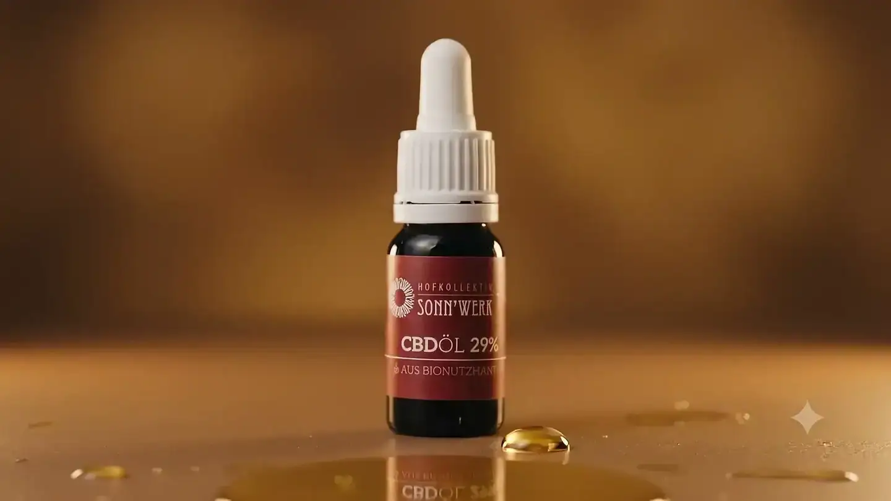

SONNWERK × Rustam · Work, Value & Collaboration
From the field to the bottle.
From the work to the offer.
What has been built. The decisions behind it. What is still missing before launch. And how we bring the one-time payment and a future revenue share together.
01 / Context
Why design makes a difference.
This external video frames the role of design in general terms. It is not evidence of SONNWERK results.
External explainer · 5:44
02 / Walkthrough
The design in four chapters.
The motifs tell origin, craft, product and orientation. The AI-produced narrative scenes are marked as such and are not documentation of the production.
From the presentation · The four design decisions
One continuous story.
Four deliberate decisions.
The website should make what is special about SONNWERK easy to understand: origin, work on the farm and the products belong together. The design is built around that order.
A film you drive yourself.
The image sequence responds to scrolling. The visitor sets the pace from the drop of oil to the bottle and can jump straight to the content. The motion explains a connection; it does not stand between the reader and the offer.
The scenes are AI-produced narrative images. They do not document the farm's actual production processes.
Typography with character.
Fraunces gives the headings a distinct, editorial voice. Space Grotesk keeps explanations, navigation and numbers calmly readable. Large titles open a chapter; finer rules and smaller labels order the content.
From origin to product.
Field, harvest, extraction, bottle: the four chapters connect the start of the story with the visible offer. The gallery invites exploration, and product and category pages then lead to concrete information.
Restraint on purpose.
Warm paper, deep green and a single gold accent form the base system. Real product images stay recognisable. Thin rules, clear spacing and a few recurring shapes give the story room.
The current scope · counted again
More than four pages.
One coherent presence.
The original presentation described four pages. The current build contains 25 regular page routes. The error page and this negotiation area are not counted. Product and category pages use shared templates; 25 routes do not mean 25 independently designed layouts.
| Building block | What is in place | What is still being agreed |
|---|---|---|
| Brand presence & structure | Custom design, typography, colour world, origin story and page structure. | Sign-off of the final content, claims and product presentation. |
| Website & navigation | Astro website, farm/horse content, gallery, shop overview, categories, products and cart view. | Integration with the production commerce system and a review of the full purchase path. |
| Motion & interaction | Scroll-driven image sequence, draggable gallery, transitions and responsive design. | Acceptance on agreed devices; checks of keyboard, motion settings and loading behaviour. |
| Media | Four narrative AI clips, selected stills, compressed web media and derivative single frames. | Additions agreed for launch; future commercials and campaign media handled separately. |
| Research & planning | Existing strategy and channel research, assumptions, decisions and a work register. | A current product/channel review and prioritisation before any concrete measures. |
See all 25 routes and how they are counted
Local production build, 8 September 2026. 26 generated pages including 404. The 25 regular routes are listed below. This is an inventory count, not a statement about completed live purchases or legal approvals.
//agb//arbeit-mit-dem-pferd//datenschutz//galerie//hof//impressum//produkt/bio-cbd-oel-19//produkt/bio-cbd-oel-5//produkt/bio-cbd-oel-7//produkt/bio-deocreme-rosenholz//produkt/cbd-balsam-kuehlend-stark//produkt/cbd-balsam-waermend-stark//produkt/cbd-gel-kuehlend-stark//produkt/cbd-gel-waermend-stark//produkt/cbd-oel-fuer-hunde//produkt/dusch-shampoo-bergkraeuter//produkt/tagescreme-nachtcreme-set//shop//shop/balsam//shop/gel//shop/kosmetik//shop/oel//shop/tierprodukte//warenkorb/
03 / Evidence
The work behind the visible result.
The mapping shows result and purpose first. Time figures are reconstructed ranges or self-reported, not a timesheet.
01
Discovery, design specification & brand direction
Research synthesis, design specification and handoff.
So that decisions and the build share a common frame.
Method & evidence
Reconstructed · 20–30 hours. Estimated from planning documents, scope and documented review cycles. Open the public register
02
Website design & engineering
Website, commerce prototype, interactions and lower-barrier fallback paths.
So that products are understandable and the path to purchase is clear.
Method & evidence
Reconstructed · 90–130 hours. Estimated from the application, rendered pages, Git output and QA evidence. Open the public register
03
Journey media production
Four approved journey chapters and accompanying stills production.
So that origin and offer come together visually.
Method & evidence
Self-reported · 40+ hours. A stated minimum, supported by the approved clips and production records. Open the public register
04
Media pipeline
Extraction, crops and responsive delivery.
So that media work consistently in the right formats.
Method & evidence
Reconstructed · 20–30 hours. Estimated from scripts, frame sets and delivered assets. Open the public register
05
Market research & strategy
Channel, funnel, brand, regulatory and evidence work.
So that future measures build on checkable foundations.
Method & evidence
Reconstructed · 50–70 hours. Estimated from datasets, analysis workflows and the strategy pack. Open the public register
06
Project direction, review & documentation
Decision history, planning, coordination and technical handoff.
So that scope, decisions and next steps stay traceable.
Method & evidence
Reconstructed · 15–25 hours. Estimated from the build log, handoffs, correction plans and review cycles. Open the public register
04 / Scope
Delivered, then to launch, then together.
Already in place
Visible and evidenced.
Website, interactions, media, research and strategy artefacts have been built and are placed in the register.
Up to the agreed launch
Make the shop ready to use.
Commerce integration, approved product content, launch hygiene, accessibility/QA and specifically agreed media. The Austria-first version is re-estimated before signing.
Developed together afterwards
Improve, test, report.
Ongoing optimisation, content and creative production, campaign planning, testing and reporting within a jointly defined operating scope.
Proposed revised scope definition: the fixed price covers the agreed website/media package including the work already produced and the completion agreed together. It does not create any retroactive or automatically binding fee.
From the presentation · Continuity in the shop
A new presence.
A familiar back office.
The proposed integration path keeps WordPress and WooCommerce as the place of administration. Products and prices would continue to be maintained there. The new interface would read the shop data it needs. This connection is a completion point, not an already confirmed production integration.
- 01 · Administration
WordPress / WooCommerce
Products, orders and existing business processes.
- 02 · Connection
Store API
An agreed data exchange, cart and checkout link.
- 03 · Interface
SONNWERK website
New presentation, orientation and access to the range.
Viva Wallet, vouchers, affiliate features, customer accounts and other existing extensions are checked individually for compatibility. "No migration" is the goal of this approach; uninterrupted operation and full compatibility are only confirmed after testing.
Three ways to checkout — a deliberately chosen launch scope.
Connect the existing checkout
The purchase is completed in the existing environment. The focus is on passing cart and customer steps cleanly. This path still needs tests of prices, shipping, payment and order confirmation.
Checkout in the SONNWERK style
Colours, typography and controls are adapted to the new presence. This matches the recommendation from the presentation, subject to a technical review and agreed effort.
Custom checkout
A bespoke implementation extends the technical responsibility. Scope, maintenance, payments and testing need a separate budget and their own schedule after a stable launch.
What has to be settled before launch
- Access and inventory. Confirm owners, secure working access, a test environment, data sources and active extensions.
- Integration and content. Bring together product data, prices, stock, shipping, the payment path and approved copy.
- Testing and acceptance. Work through test orders, error cases, mobile views, keyboard operation, metadata, redirects and a sign-off round.
- Handoff and operation. Set responsibilities, documentation, open points and the first shared review rhythm.
The earlier presentation mentioned two to three weeks. That does not create a new schedule or revision commitment. We set the launch date after access, an integration review and final scope approval.
05 / Marketing roadmap
First a strong foundation in Austria.
Planned sequence · not a revenue forecast
- 01
Austria: infrastructure
Check access, recovery and status of the Instagram account; assess profile, highlights, product goals and measurement readiness only after an audit.
- 02
Content & engagement
Proposed pilot format: two short AI-assisted commercial concepts, two product/farm promos, weekly stories and a permissible giveaway concept — subject to scope and budget.
- 03
Measure & improve
Report monthly from reach through qualified visits to enquiries, orders and repeat purchase. Capture baselines first; one variable per test.
- 04
USA: test demand
Only after the Austrian foundation and a product/channel review: country-specific concept tests and a transparent interest list, with no order and no shipping promise.
- 05
Decide on market entry
Only with viable demand, law, import/fulfilment, payments and contribution margin. Otherwise keep learning or postpone.
Derive the decision together from real margins and fixed costs.
↺ Learning loop: insights from step 5 feed back into step 3 "Measure & improve".
A US interest list is not activated in this UI. Product and channel eligibility are checked before content and paid distribution; optimising Instagram does not imply any automatic permission to advertise CBD. Ad budget, prices, shipping, creator fees and generation subscriptions are separately agreed expenses.
06 / Price & work equivalent
What the one-time payment covers.
The €18,000 delivery package sits alongside a disclosed work model. The fixed portion is not a statement about lifetime income; a later revenue share is considered separately.
| Basis of calculation | Hours | €18,000 divided by hours | At €110/h reference |
|---|---|---|---|
| Delivered work, reconstructed midpoint | 280 | €64.29/h | €30,800 |
| Existing full delivery model, including planned completion | 460 | €39.13/h | €50,600 |
Delivered model: 235–325h → €76.60–€55.38/h. Total model: 380–540h → €47.37–€33.33/h. The media line includes 40+ self-reported hours; the upper endpoints are modelling values, not a hard ceiling.
Vienna industry reference, 2024 survey : WKO Vienna/IFES gives a €110 median for general concept/consulting work in agencies (sole traders €100). There is no Austria-wide 2026 figure and no quote for the full package. All comparison values here exclude VAT and levies; external services and future operations are not included.
A second opinion
Not just my estimate.
Ask the price question yourself.
This is the price of the finished product — the whole thing designed, built and launched — benchmarked against average Austrian market rates. The QR code opens ChatGPT with the question below: it points the model at the live site and lists the parts of the package it cannot see from a browser. You decide there whether to send it.

Or click the QR code directly.
The full question
Estimate the total market price in Austria, at average market rates, to design, build and launch a finished project like this live site: https://rustamg16.github.io/002-sonnwerk/ (price it complete and launched, not a work in progress). Beyond what the browser shows, the package also includes work that is not visible to you: - Scroll-scrubbed canvas hero (an image sequence advanced frame by frame on scroll, not a video) and an infinite draggable gallery canvas. - Four AI-generated narrative film clips (field, harvest, extraction, bottle) plus stills, with direction and prompting. - Media pipeline: frame extraction, compression, responsive delivery. - Market research: channels, competitors, Austrian CBD advertising rules. - Marketing strategy: Austria-first go-to-market roadmap, Instagram plan, measurement framework, staged US demand test. - Discovery, brand direction, design spec, developer handoff. - WooCommerce/WordPress integration and full launch QA. - Project management and documentation. Give one total and a range per area, cite dated Austrian sources, and flag assumptions. Do not invent quotes or guaranteed compliance.
An AI answer is extra orientation, not an independent assessment and not a binding market quote. Check the sources, date, scope of work and double counting. The Vienna industry reference and the disclosed hours model sit right next to it.
07 / Proposal
Payment today. Share later.
A continuous slider moves from full planning certainty toward a larger share of later revenue. All values are a basis for negotiation, not an assumption made by a click.
On the left, €18,000 applies with the base rates 18% / 14% / 10% / 7%. Toward the right, the one-time payment falls to €10,000. The first share band then rises from 18% to 30%; every further band rises in the same proportion. At €15,000, the first band is still 22.5%.
Annual eligible online revenue
The bands start again in every contract year. Please enter only the net basis to be defined in the contract; VAT, returns, discounts, shipping and other deductions must be settled in the contract.
Annual bands
Displayed percentages are rounded to two decimals. The calculation uses the unrounded rates.
| Range | Base rate | Your selection |
|---|---|---|
| Up to €100,000 | 18% | 18% |
| Over €100,000 up to €250,000 | 14% | 14% |
| Over €250,000 up to €600,000 | 10% | 10% |
| Over €600,000 | 7% | 7% |
Four years · assumes continuation, not a guaranteed contract
Cumulative payments compared
Base rate Your selection
Base rate: both lines coincide at four times €20,000 annual revenue; the total is €32,400.
- Base rate: start €18,000; after year 1 €21,600; after year 2 €25,200; after year 3 €28,800; after year 4 €32,400.
- Your selection: identical to the base rate.
Low and zero revenue visible
Same eligible revenue per year
| Annual revenue | Base rate total | Your selection total | Difference |
|---|---|---|---|
| €0 | €18,000 | €18,000 | €0 |
| €10,000 | €25,200 | €25,200 | €0 |
| €20,000 | €32,400 | €32,400 | €0 |
| €50,000 | €54,000 | €54,000 | €0 |
| €100,000 | €90,000 | €90,000 | €0 |
| €250,000 | €174,000 | €174,000 | €0 |
| €700,000 | €342,000 | €342,000 | €0 |
My proposal is to pay the one-time work fairly and to tie further development to our shared success. At €18,000, your ongoing revenue share stays lower. If more liquidity at the start matters more to you, a correspondingly higher share can reduce this one-time payment. What matters is that scope, basis of calculation and expectations are clear for both sides. There is no monthly minimum; the ongoing scope of work is tied quarterly, together, to capacity and budget.
The calculation measures payments and remaining revenue before other costs — neither personal net income nor company profit. No discounting, inflation, financing or taxes are taken into account.
What the share means
A collaboration needs
more than a percentage.
The lower first payment shifts part of my compensation onto uncertain future revenue. In return, my share rises. This is a concrete negotiation proposal, not a guarantee of any particular result.
The basis of calculation
The online channels agreed in writing are included. VAT, returns and discounts are netted out; the treatment of shipping and other deductions is set out explicitly. Other company revenue or B2B business is not automatically included.
Falling marginal bands
Each rate applies only to its own revenue segment. Crossing a threshold does not retroactively re-rate the whole revenue. In this model the bands start again in every contract year.
Capacity and ongoing work
Each quarter we agree priorities and available scope: further development, content, creative production, testing and evaluation. Low revenue cannot fund unlimited production. New projects and external costs need their own sign-off.
Accounting and continuation
Measurement sources, billing rhythm, access, audit evidence, term and termination are agreed in writing. The four-year calculation assumes continuation; twelve-month renewals are not a guaranteed four-year commitment.
What we want to win together
A presence you can follow, a working purchase path and a learning process built on real numbers. If the collaboration convinces, an honest reference and an approved case study can come out of it. Publication, usage rights and referrals are agreed separately.
The fixed package price covers the agreed website and media work including agreed completion. Advertising, promotion pricing, shipping, creator fees, subscriptions and later operations are not silently included. No monthly minimum is introduced by this slider.
08 / Next step
Follow all of it.
Decide together.
The Control Room contains the public work register, sources and the existing negotiation view.
Open the Control Room